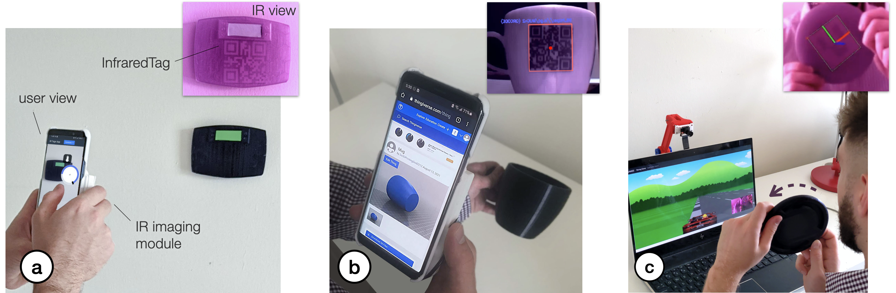

InfraredTags: Embedding Invisible AR Markers and Barcodes Using Low-Cost, Infrared-Based 3D Printing and Imaging Tools

Fig. 1. SensiCut augments standard laser cutters with a speckle sensing add-on that can (a) identify materials often found in workshops, including visually similar ones. (b) SensiCut’s user interface integrates material identification into the laser cutting workflow and also offers suggestions on how to adjust a design’s geometry based on the identified material (e.g., adjusting the size of an earring cut from felt since the kerf for felt is larger than for other materials). (c) Each identified sheet is cut with the correct power and speed settings.
Laser cutter users face difficulties distinguishing between visually similar materials. This can lead to problems, such as using the wrong power/speed settings or accidentally cutting hazardous materials. To support users, we present SensiCut, an integrated material sensing platform for laser cutters. SensiCut enables material awareness beyond what users are able to see and reliably differentiates among similar-looking types. It achieves this by detecting materials’ surface structures using speckle sensing and deep learning.
SensiCut consists of a compact hardware add-on for laser cutters and a user interface that integrates material sensing into the laser cutting workflow. In addition to improving the traditional workflow and its safety, SensiCut enables new applications, such as automatically partitioning designs when engraving on multi-material objects or adjusting their geometry based on the kerf of the identified material.
We evaluate SensiCut’s accuracy for different types of materials under different sheet orientations and illumination conditions.
INTRODUCTION
While there have been many support tools for laser cutting that help users with tasks such as automatically packing parts onto sheets, systems that support users with the different material types available for laser cutting are largely unexplored.
For users, working with the various materials available in a workshop comes with several challenges: First, identifying unlabeled sheets from scrap buckets or material stockpiles in a shared workshop is challenging since many materials are visually similar. As a result, users may take the wrong material from the stack and use it with another material’s power and speed setting. This can lead to wasted material when the power setting is too low, causing the outline to not be cut through – or worse the material may catch fire when the power is too high leading to safety risks. Further, there are many materials that are not safe to laser cut because they release toxic fumes. These hazardous materials may easily be mistaken for safe materials due to similarity in appearance (e.g., PVC vs. acrylic).
Because of the challenges outlined above, laser cutter users desire smarter machines that can "identify the materials they [are] working with, so that the system could [...] suggest settings based on material" as shown in a recent HCI study by Yildirim et al. One naive solution for this is to add a camera to laser cutters to automatically identify the sheets. However, a conventional camera can be easily fooled by visually similar materials or materials with printed decorative textures that imitate another material.
To ensure reliable identification, recent laser cutters use sticker tags attached to the sheets (e.g., QR codes on Glowforge Proofgrade sheets). As can be seen in Figure 2b, these tags can be detected by a camera even when materials look similar or are transparent. However, scanning the tags to detect the material type has its own issues. First, a new tag has to be attached onto each new material sheet. Second, laser cutter users need to be careful to not cut off the tag to ensure that the remaining part of the sheet can later still be identified. These issues exist because using tags for identification is not inherently material-aware as the laser cutter does not measure the physical properties of the material.
In this paper, we investigate how we can identify laser cutting materials by leveraging one of their inherent properties, i.e., surface structure. A material’s surface structure is unique even when it is visually similar to another type. To achieve this, we use speckle sensing. This imaging technique works by pointing a laser onto the material’s surface and imaging the resulting speckle patterns. We built a hardware add-on consisting of a laser pointer and a lensless image sensor, which can be attached to the laser cutter head using a mount. We then use the captured speckle patterns to identify the material type with our trained neural network. Our user interface uses the material type information to support users in different ways, i.e. it automatically sets the power and speed settings for the detected material, it warns the user against hazardous materials, it automatically adjusts the shape of a design based on the kerf for the detected material, and finally, it automatically splits designs when engraving onto multi-material objects. We also discuss how speckle sensing can be used to estimate the thickness of sheets as another material-aware component for future laser cutters.

Fig. 2. Existing material identification approaches: (a) Manually selecting from a database (e.g., ULS ) or
(b) scanning QR code stickers on sheets (Glowforge). (c) SensiCut uses speckle sensing to identify the material based on its surface structure without the need for additional tags.
In summary, by leveraging speckle sensing as an identification technique, we can improve the material awareness of existing laser cutters. Our work enables safer and smarter material usage, addresses common material identification-related challenges users face when laser cutting, and encourages makers to reuse laser-cut scraps to reduce waste. Our contributions are the following:
- An end-to-end laser cutting pipeline that helps users identify materials by sensing the material’s surface structure using laser speckles to, e.g., automatically set the corresponding power/speed, warn against hazardous materials, adjust designs based on material-specific kerf, or split designs when engraving onto multi-material objects.
- A compact (114g) and low-cost material sensing add-on for laser cutters that simplifies hardware complexity over prior work by using deep learning.
- A speckle pattern dataset of 30 material types (38,232 images), which we used to train a convolutional neural network for robust laser cutter material classification (98.01% accuracy).
- A technical evaluation showing which visually similar materials speckle sensing can distinguish under various sheet orientation and illumination conditions.
MOTIVATION
SensiCut addresses an important open challenge in the personal fabrication literature. A recent field study in HCI revealed an unaddressed user need for fabrication tools concerning the “awareness of material types”. In particular, users wished that the tools could “identify the materials they were working with [and] suggest settings.” The authors conclude that “HCI researchers could advance [these tools] by leveraging new sensing [...] capabilities”.
To further understand what specific challenges exist, we surveyed five additional HCI publications. We also conducted formative interviews with six expert users that we recruited by reaching out to makerspaces. Each expert user had several years of laser cutting experience working with different material types. During the 1-hour semi-structured interviews, we interviewed them about their experiences using different material types, difficulties they had identifying materials, and how different material types affected their designs for laser cutting. Additionally, we performed a study in which we gave 13 novice users, who had used laser cutters at least once but no more than four times, a list of 30 materials commonly found in workshops (list of materials in Section 6.1), and asked them to match them to 30 unlabeled sheets. For the interview responses, we took a bottom-up approach in our thematic analysis to identify four main challenges, which we report below.
Characterizing unlabeled sheets: We found that users have a hard time identifying materials. In our study, novices were able to label on average only 29.23% (SD=6.41) of the sheets correctly. The ones that were correctly identified by most users were cardboard and cork. The top 10 mislabeled sheets were all different types of either plastic or wood. However, this is not only an issue for novices, but also for experts. One senior maker we interviewed reported that certain materials are too similar to distinguish by only looking and touching. He added that he checks if a sheet is acrylic or Delrin by "breaking the sheet and seeing how brittle it is." Identifying materials by their surface structure eliminates these issues since even similar types of plastic have different surfaces structures.
Democratizing material knowledge: One way to help novices identify materials is to ensure sheets are labeled at all times. However, in practice, this is infeasible to do for all sheets. One expert we interviewed, a manager of a large workshop, said that "there is no way to keep track of all the sheets [as] so many people contribute to the scrap piles." Another option if sheets are unlabeled is that novice makers ask an experienced maker which type of material it is. However, Annett et al. report that makers with “knowledge [of] material [were] often difficult to access” and that users need “intelligent sensing [of] materials.” Hudson et al. show that “early in the casual makers’ learning process motivation appeared to be very fragile” and “early failures [can] result in them completely giving up.” A smart system that provides access to reliable material identification would eliminate this issue, thereby lowering the entry barrier to laser cutting and democratizing its use.
Automating mundane work: Laser cutting requires several steps that are mundane and would benefit from being automated. For instance, in today’s workflow, users have to identify the sheet, select the correct material type from the material database, and then verify the power/speed settings. Yildirim et al. found that professional users want "automated [fabrication tools] that could pick up menial work, [e.g.] registering materials." They "find it frustrating when they have to monitor an autonomous [tool]." A material-aware sensing platform can remove the tedious overhead and allow users to focus on the essential work.
Enhancing safety of all users: Laser cutting poses both safety and health hazards. In our interviews, all experts reported that they experienced multiple fires in the laser cutter at their workspaces. One of them said that "all of the places [he has] worked at had a fire" and that it is a "huge safety risk." Concerning health, one of our interviewees, a class instructor, said someone almost cut a hazardous material that includes chlorine, which would release toxic fumes and corrode the machine. In addition, not adhering to the rules would have "revoked all class participants’ access to the workshop." For safety-critical tasks, HCI researchers have looked into designing interfaces where the role of users is “mediated by computer technology”. For fabrication tools specifically, Knibbe et al. found the “implementation [of] safety alerts could provide significant benefits within group makerspaces.” A smart sensing platform can provide such safety alerts and prevent human error by determining if hazardous materials are used or when users accidentally select wrong laser settings, which can cause a fire.
SPECKLE SENSING HARDWARE ADD-ON FOR LASER CUTTERS
In this section, we first discuss the working principle behind laser speckle imaging. We will then show how we built a sensing add-on that can be mounted onto existing laser cutters and highlight the technical contributions of our add-on over prior work.
Speckle Sensing Working Principle
Figure 3a illustrates how laser speckle sensing works. It uses a coherent light source, i.e., a laser, to create the speckles and an image sensor for capturing them. To create the speckle pattern, the laser light reflects off the material surface, resulting in a reflectance pattern (speckle) of bright and dark spots that looks different depending on the material’s surface structure. This occurs because the tiny features of the material surface lead to small deviations in the optical path of the reflected laser beam. To show this, we provide additional electron microscope images of different materials in Figure 3b. Although the materials look visually similar to the human eye, the electron microscope images clearly show different surface structures, resulting in different speckle images that can be used for material identification.

Fig. 3. Speckle sensing. (a) Laser rays reflect off the material surface and arrive at the image sensor. Phase differences between the rays result in mutual interference and thus dark or bright pixels in the captured image. (b) Different materials viewed by a regular camera, a scanning electron microscope, and our speckle sensing imaging setup. (c) Our speckle sensing add-on consists of a laser pointer, lensless image sensor, microprocessor, and battery.
Hardware Add-on
To integrate speckle sensing into an existing laser cutter, we consider (1) which light source and
(2) image sensor to use, as well as (3) how to mount all required components on the platform. We provide additional specifications for each component in the appendix.

Laser Pointer: Our initial idea was to utilize the laser pointer present in our laser cutter (model: Universal Laser Systems (ULS) PLS6.150D), which conventionally serves as a guide to align the material sheet. However, we found that laser pointers need to be sufficiently powerful to create speckles detectable by the image sensor. For this reason, green laser pointers work best given equal power since most commercial cameras have a Bayer mask with twice as many green elements as red or blue. Unfortunately, our laser cutter has a red laser pointer with a power of <1 mW, which according to our experiments was not sufficient to create detectable speckle patterns. We therefore decided to use an additional green laser pointer (515nm, <5mW). In the future, this additional laser pointer may not be necessary if manufacturers increase the power of their existing laser pointers.
Image Sensor: Our goal was to choose a sensing setup that is compact, i.e., uses as few components as possible, yet provides sufficiently high resolution to detect the speckles. When surveying the related work, we found that existing setups consist of multiple sensors and/or LEDs. Each component in these setups helps acquire a unique datapoint related to high-level statistics, such as the average brightness or overall spectral reflectivity, which are then input into a classifier as 1D data. We found that we can reduce the hardware complexity over prior work to only a single image sensor if feed the raw image, in which the 2D spatial data correlates with the materials’ surface structure, directly into a convolutional deep neural network (see Section 6.3). Although the 2D image input requires additional time to compute the prediction result compared to 1D data, it does cause not a disruption to the laser cutting workflow (0.21s on a 2GHz Intel Core i5 processor). For the image sensor, we chose an 8MP module (model: Raspberry Pi). As explained previously, this image sensor, like most commercial ones, has a higher sensitivity to the green region of the spectrum, which is beneficial for capturing speckle images created by our green laser pointer.
We placed the laser pointer and image sensor as close as possible so that the speckles’ intensity caused by the laser illumination is high enough when captured by the image sensor. Before mounting the image sensor, we removed the lens of the camera module using a lens focus adjustment tool. We did this because the laser pointer only illuminates a tiny area on the material sheet (i.e., size of the laser spot). When imaging the sheet with the off-the-shelf camera module that has the lens attached, the speckle is present in only a small portion of the entire image because the lens directs not just the laser light, but all the available light rays in the scene onto the image sensor. This gives us less speckle data to work with. When removing the lens from the camera module, however, it is mainly just the reflected laser light that hits the sensor, causing the speckle pattern to appear across the entire image (last column in Figure 3b). Thus, the camera module with no lens utilizes all the pixels of the bare image sensor and can capture a higher-resolution pattern.
Microprocessor and Battery: Since commercial laser cutters are closed source, we had to add a small and lightweight microprocessor and an external battery pack to allow our add-on to capture images. Since the microprocessor has limited computational capacity, we send the captured images wirelessly to a computer for further processing. To make speckle sensing available in future laser cutters, manufacturers do not need to add these components since laser cutters already include processing hardware and a power supply.
Mounting on Laser Cutter: To make our hardware add-on compact and easy to use, we designed and 3D printed the lightweight mechanical housing (60g) shown in Figure 3c. The housing snaps onto the laser cutter’s head and can be mounted with a small rod. Attaching the sensing hardware to the laser head allows us to avoid additional calibration since because of the mount, the add-on is always located at a fixed offset from the laser. All together, the add-on weighs 114g.
In summary, our speckle-based hardware add-on consists of a laser pointer, a lensless image sensor, a microprocessor, and a battery pack. However, to integrate speckle sensing into future laser cutters, manufacturers only need to add the lensless image sensor – all other components (power and computing infrastructure, laser pointer) already exist in laser cutters.
USER INTERFACE & APPLICATIONS

In this section, we describe our custom user interface (UI) that integrates laser speckle sensing into the laser cutting pipeline. In particular, we show how it helps users identify the material of a single sheet or multiple sheets at once, and supports users with cutting or engraving multi-material objects. Additionally, SensiCut can offer safety warnings, provide extra information on materials, and help with kerf-related geometry adjustments. We also describe how we use the interface and SensiCut’s material sensing capabilities for different applications.
Similar to the traditional laser cutting pipeline, users first start by loading their design (i.e., an SVG file) into the SensiCut UI, which subsequently shows it on the canvas (Figure 4a). Next, users place the material sheet they intend to use inside the laser cutter.

Fig. 4. SensiCut UI. (a) The Pinpoint tool allows users to identify the material at a desired location on the cutting bed. (b) The user enters the thickness value corresponding to the detected sheet and starts cutting.
Identifying Single Material Sheets
To identify a single material sheet, users point SensiCut’s laser pointer to a desired location on the sheet as shown in Figure 4a. They can do this by first choosing the Pinpoint tool (arrow 1) and clicking the point on the canvas that corresponds to the physical location in the laser cutter (arrow 2). SensiCut then moves the laser over this location to capture the speckle pattern and classify the material. The resulting material name is then shown to the user (arrow 3).
After the user clicks Continue, the shapes in the canvas are color-coded to reflect the material type (e.g., red corresponds to Cast Acrylic). The user then enters the material thickness in the text field next to the classification result (Figure 4b). Once ready for laser cutting, they can hit the Start button and SensiCut automatically retrieves the appropriate laser power, speed, and pulse per inch (PPI) settings from the material settings database.
Using the identified material type, SensiCut can further support users via different functionalities:
Toxic and Flammable Material Warnings: As mentioned in the introduction, there are many materials that should not be laser cut because they are toxic, flammable, and/or harmful to the machine. Based on the identified material type, SensiCut displays a warning whenever the user requests to cut a material that is hazardous and should not be used in the laser cutter.
Showing Material-Relevant Information: Even though some materials appear similar, they may exhibit different characteristics, which novice users may not be aware of. To address this, SensiCut displays additional information on each detected material to inform users about general characteristics of the material, ideal uses with sample pictures, and handling/care instructions. We referred to the laser cutting service Ponoko to retrieve this information. Workshop managers can edit and extend this information depending on the workshop type and its users (architecture vs. engineering).
Kerf Adjustments: Design files can have details that are too intricate for certain material types, especially when the sheets are thin. Cutting these fine geometries can fuse details together because of kerf. The kerf, i.e., the amount of the material removed due to the laser, depends on the type of the material. When details are affected by kerf, SensiCut shows a warning to the user and then offers three options to address it: SensiCut can either slightly enlarge the design based on the material type, smooth out too intricate details, or ask the user to adjust the file manually in the drawing editor (e.g., Adobe Illustrator).
Application: Fabricating a Face Shield From Different Unlabeled Scraps: In this application example, we would like to fabricate a face shield and use transparent plastic materials to ensure clear sight while wearing it. We start by surveying different designs online and after deciding on one, we download the parts, which consist of a visor and a shield. The design instructions highlight the importance of using the correct material for each part. In particular, it is recommended to use a transparent rigid material for the visor (e.g., acrylic) and a transparent flexible material for the face shield (e.g., acetate or PETG).
We start by browsing through the leftover scrap materials from our workshop. However, while going through the transparent scrap materials, we notice that almost all of them are unlabeled. To make the visor, we take the first rigid transparent material we find in the pile that has a sufficient size and place it inside the laser cutter. We then open SensiCut’s UI (Figure 4a) and select Pinpoint to identify the material at a desired location. The right-hand bar shows the material has been detected as cast acrylic, which is a suitable rigid material for the visor. Once we confirm, SensiCut automatically retrieves the appropriate power/speed settings for this job and the laser cutter starts cutting the acrylic.

Fig. 5. Making a face shield. (a) Find flexible sheets from the stockpiles and (b) place in the cutter. (c) Upon identification, the UI labels all 3 materials and gives relevant information on, e.g., their handling and safety.
(d) After the cut parts are assembled, the shield can be safely sanitized with alcohol.
We repeat the procedure for the shield, which needs to be made from a flexible transparent material. We go back to the scrap materials and find three different flexible sheets (Figure 5a). We read online that acetate and PETG may be more suitable than other plastics, but are not sure which one is which. We take all three and place them in the laser cutter. In the UI, we then choose Identify sheets and set the number of sheets to 3. Next, we click on one point on each sheet to instruct SensiCut to identify the material there. Once the results are displayed, we realize that one of them is a polycarbonate (Lexan), which SensiCut labels with a "hazardous" warning (Figure 5c). The other two sheets are identified as acetate and (thin) cast acrylic.
To learn more about the difference between the two materials, SensiCut shows information from its knowledge database and displays it on the corresponding material. For example, it shows that acetate has high impact strength and is reasonably flexible, and that, in contrast to acrylic, it can be wiped down with alcohol, which is important to disinfect the shield. We remove the Lexan and acrylic sheets from the laser cutter, choose acetate in the UI, and start cutting. Now that all parts are cut, we can assemble the final face shield (Figure 5d).
Identifying Multiple Sheets of Different Materials at Once
SensiCut also allows users to cut multiple sheets of different material types in rapid succession. The user first loads the design files that contain the shapes they want to cut from the different sheets. Next, they place the corresponding material sheets inside the laser cutter and initiate the Scan multiple shapes mode. This causes SensiCut to go to the location of each shape and capture an image there for material identification. The resulting material names are then displayed in the Material Detection sidebar and the shapes are similarly color-coded based on the material types.
Application: Rapid Testing of Multiple Material Types for Product Design: In our second example, we want to rapidly prototype a new earring design in a white color. We want to fabricate the earrings to test the look and feel of different materials to determine which one looks best when worn. To evaluate different material types, we pick a handful of white samples from a material swatch (Figure 6a).

Fig. 6. Rapid material testing for product design. (a) Choosing multiple samples from a material swatch and inserting in the laser cutter. (c) After sensing, the UI matches each shape with the corresponding material. It also warns that the kerf for felt will compromise the design.
To speed up our prototyping process, we want to cut all the material samples at once. To do this, we place all our selected material samples on the laser cutter bed as shown in Figure 6b. We then load the earring design. Next, we position a copy of the earring design in the UI in the location where each material sample is placed. Next, we choose the Scan multiple shapes option. After the scan, each earring’s shape is color-coded to reflect the detected material type: felt, foam board, cast acrylic, and leather (Figure 6c).
Next, we enter the thickness for each material sheet: 1mm for felt and leather, and 3mm for the others. For felt, SensiCut shows a notification that our design has details that are too intricate for a thickness of 1mm and may thus fuse together because of kerf (Figure 7b). We choose the Make shape bigger option and enlarge the felt earring so that the minimum feature size no longer goes below the kerf limit (Figure 7a). Once adjusted, we cut and engrave all sheets in a single job. The finished earring prototypes are shown in Figure 7c.

Fig. 7. Adjusting the design for kerf. (a) The user can enlarge the shape to compensate for the thicker kerf for felt. (b) Without the adjustment, details like the hole and fine blades of the leaf disappear in the cut felt. The fabricated prototypes.
Engraving onto Multi-Material Objects
Compared to individual material sheets, cutting or engraving designs onto multi-material objects (e.g., the smartphone case in Figure 8a) is a particularly challenging task. It requires a cumbersome workflow where users first have to split the design into multiple files, one for each material. More specifically, proper alignment of the shapes in the digital design with the different parts of the physical object is challenging without knowing where the material borders are located.
SensiCut facilitates cutting and engraving on multi-material objects by automatically splitting the design precisely along the border of different materials by sensing the material type at each point in the design. For this, users start by loading a single file containing the entire design, insert the multi-material object into the laser cutter, position the design onto the multi-material object, and select the Scan multi-material objects mode. SensiCut then samples points along the laser-cut path to identify the material at each point. The scanning progress is shown in the SensiCut UI by highlighting the scanned trajectory. After scanning is completed, SensiCut splits the design according to the detected material type at each point to ensure the correct laser settings will be used.
Application: Personalizing Existing Multi-Material Products: In this example, we want to engrave a custom design at the center of a smartphone case that consists of two different materials across its surface, i.e., leather and wooden parts (Figure 8a).

Fig. 8. Engraving a multi-material phone case, which consists of (a) wood-like rubber and leather. SensiCut scans (b) the input design’s outline and (c) splits it into two parts based on the material type detection. Engraved design.
First, we load the design file, position it on top of the phone case, and select Scan multi-material objects, which then moves the laser head along the design’s engraving path to detect the material at each point (Figure 8b). Once the scan is complete, SensiCut splits the design into two parts, one for each of the two materials (Figure 8c).
Once SensiCut identified the materials, we realize that the part we had thought was wood is actually made of silicone rubber with a decorative wood pattern. SensiCut is not deceived by the disguise pattern because it measures surface structure and sets the correct laser engraving settings. Once we confirm, our design is engraved onto our multi-material phone case (Figure 8c).
Application: Customizing Multi-Material Garments: Figure 9a shows another multi-material item, i.e. a T-shirt, that we want to engrave with a custom seagull design. The T-shirt has a plastic iron-on material applied on it. To engrave our design, SensiCut detects which parts are made of textile and which are made of plastic. It then splits the seagull design into multiple paths accordingly and assigns the correct laser power/speed settings for each one (Figure 9b). If we had instead used only one set of laser power/speed settings for the entire seagull design, i.e., the settings for either textile or plastic, the lines would either not be visible on the yellow plastic or the textile would have been burned. Further, it would be particularly difficult to achieve this without SensiCut: One would have to remove the iron-on plastic from the fabric itself, engrave the plastic and fabric separately, and put them back together precisely. This shows how SensiCut could help users further customize garments that have non-textile parts quickly and on demand.

Fig. 9. Engraving a pattern on a T-shirt that has (a) plastic details on it. (b) SensiCut uses the right combination of laser settings after partitioning the design (middle). Top/bottom shows the outcome for singular settings.
CLASSIFICATION OF MATERIALS
SensiCut can differentiate between 30 different materials relevant to the challenges laser cutter users face. In the next section, we discuss how we built a dataset of speckle patterns of these materials using an automated script, and how we trained a convolutional neural network (CNN) to be able to distinguish between them.
Choosing Material Samples
For our dataset, our goal was to choose materials that are most representative of the materials commonly found in makerspaces and workshops, with a particular focus on the ones that cause confusion because of their appearances. Figure 10a summarizes the list of materials we compiled by surveying a range of online communities (e.g., Thingiverse, Instructables), educational materials on laser cutting, supply vendors, as well as the laser cutter material databases that come with the default laser cutter control software (e.g., ULS Universal Control Panel).
The resulting material list includes 30 different materials ranging from different types of paper, plastic, wood, fabric to (engraved) metal. In the next section, we discuss how these selected materials are representative of the challenges that laser cutter users face.
Different Laser Cutting Materials with Similar Appearance: As our formative material labeling study showed, plastics are particularly challenging to distinguish for users due to their visual similarity (Figure 10b). To represent such cases, we purchased samples of cast acrylic, extruded acrylic, and Delrin (also known as acetal or POM) of the same color, which require different settings to properly cut/engrave a design. We also included samples of different transparent sheets, i.e., acrylic, PETG, and acetate. In addition, we included other materials that have slightly varying appearances, but still are difficult to distinguish for non-expert users who are not familiar with the specific nuances, such as different types of wood (e.g., maple, oak, bamboo, or birch).
Hazardous Materials that Look Similar to Safe Ones: To represent cases where some of the commonly found materials in workshops are hazardous (flammable, toxic, or harmful to the machine) and cannot be safely laser cut, we included polyvinyl chloride (PVC), Lexan (polycarbonate), acrylonitrile butadiene styrene (ABS), and carbon fiber sheets. PVC is often mistaken for the common laser-cut material acrylic. However, it is highly toxic as it releases hydrochloric acid fumes when heated, which also rapidly corrode the laser system. Lexan and ABS are also hazardous and easily flammable2 but look similar to safe plastics. However, whether a material is considered safe for laser cutting or not depends on the specific hardware setup (air filter type and volume, power of laser) as well as local regulations. For our setup, materials in the ULS material database that comes with our laser cutter and its UAC 2000 filter (MERV 14, HEPA, 2 Carbon filters) are marked as safe. For instance, polystyrene is listed as safe for our setup but may not be safe for others. Thus, we recommend that when deployed in a new workshop, SensiCut’s database be updated by the workshop manager locally after checking material safety data sheets (MSDS) for potential laser generated air contaminants (LGAC). Workshop managers should also talk to their local occupational health institution (e.g., NIOSH in the US).
To make the material composition of our dataset representative of a real-world workshop, where certain materials like acrylic and cardboard are much more available in terms of quantity/color options, we included more than 1 sheet for these as seen in Figure 10a. This also allows us to evaluate our system for different colors and transparencies. In total, we used 59 material samples, the majority of which were purchased from Ponoko, except for the 5 hazardous material sheets (PVC, Lexan, etc.), which we purchased from other suppliers on Amazon.com. A list of these material samples and the associated vendors can be found in the appendix.
Data Capture & Material Speckle Dataset
After purchasing the different materials, we captured images of each sample to build a dataset for training our convolutional neural network.

Preliminary Experiment: Before capturing data for all materials, we ran a preliminary experiment to determine two values: (1) the distance between the image sensor and the material surface at which the speckle pattern is most visible, and (2) the number of images necessary for training the classifier with high accuracy. For the distance, we empirically found that 11cm between our image sensor and the material surface led to the best results. For the number of images, we placed material samples below the image sensor at the recommended distance and took images, moving the sample in the xy plane manually to simulate how the laser cutter would take images at various points of the sheet. We found empirically that around 80-100 images are sufficient for each material to train a CNN for classification.
Data Collection: After this manual exploration, we started the data collection of all materials. For this, we wrote a script to automate the laser cutter’s movement and image capture. For our material samples (6.3cm x 6.3cm), we chose to capture a 9x9 grid of points leading to 81 images, which satisfies our criteria from the preliminary experiment. For consistency, we kept the image sensor settings, i.e., exposure time, digital/analog gains, and white balance constant.
Additionally, we captured images at different heights (z-locations) to ensure that the network can classify materials of different thicknesses. This is necessary since the speckle pattern changes with the distance between the material surface and the image sensor. We chose 8 different heights ranging from 0mm (to support paper) to 7mm (thickest material sheet we were able to buy) spaced at 1mm increments. However, not every sheet has a thickness of a multiple of 1mm (e.g., some sheets are 2.5mm). We can generate this additional data using data augmentation methods as explained in Section 6.3. Since our model was trained for materials with a thickness of 0-7mm and the material surface was 11cm away from the image sensor, this leads to an effective detection range of 110-117mm. To integrate material identification into other cutting-based methods like LaserOrigami or FoldTronics, the model can be trained for larger distances in the future.
Dataset: Our final data set contains 38,232 images from 59 material samples of 30 unique materials (14.93 GB, 800x800 pixels each). Each material sample includes 648 images (81 images/height x 8 heights), which took about 40 minutes to capture with our automated setup. The majority of this time is spent waiting for the laser head to stabilize after moving to a new location to ensure that the captured image is not blurry. The dataset is used for training the CNN and does not need to be stored on the user’s computer. The trained CNN model that is used at detection time is 120MB. The dataset is publicly available.
Training the Neural Network
To train the CNN and build a detection model using the captured images, we used transfer learning with a ResNet-50 model that was pre-trained on the ImageNet dataset. We used the Adam optimizer with a learning rate of 0.003 and a batch size of 64. We used 80% of images for the training set and reserved 20% for the validation set.
Image Size Used for Training: For the input image size, we chose 256x256 pixels. Although we captured the images in 800x800 pixels, we found that the higher resolution caused lower accuracy as the model overfit to irrelevant details in the image. The lower resolution input also saves training time because the model has fewer nodes to compute. Moreover, it speeds up the detection during use (i.e., average prediction time: 0.21s for 256x256px vs. 0.51s for 400x400px on a 2GHz Intel Core i5). We still keep the full-size images in our dataset to enable future research.
Data Augmentation: To make the model robust to different lighting conditions and intermediate sheet thicknesses (e.g., 2.5mm), we generated additional images during training using data augmentation. Every time the network starts training on a new batch of images, a portion of the images is transformed by changing the brightness and the contrast of all pixels (by up to 30%), as well as zooming into the image to enlarge the speckles as would be the case when the thickness of the sheet decreases (by up to 20%). This allows our model to generalize better and also saves time by avoiding the capture of more images with the physical setup.
In the future, new materials can be added to SensiCut by capturing more speckle images and adding them to the dataset. For this, the neural network needs to be retrained but the weights from this previous training can be used (transfer learning), which significantly speeds up the process , i.e., takes only 10-12 minutes vs. 6 hours training from scratch.

Fig. 10. Material considerations and evaluation. (a) Most common material types for laser cutting. (b) Visually similar materials. (c) Confusion matrix from our trained classifier for 30 material subtypes.
EVALUATION OF MATERIAL CLASSIFICATION
We conducted a technical evaluation to determine our trained classifier’s accuracy. We also carried out additional tests to understand how the model generalizes to different physical conditions (rotation of sheets, illumination variations) and material sheets purchased from different vendors.
Detection Accuracy Results
The results of the classification accuracy for the 30 different materials in our dataset are shown as a confusion matrix in Figure 10c. Our average identification accuracy is 98.01% (SD=0.20) across the different materials. This is based on a 5-fold cross-validation, which we ran to ensure consistency of the classification accuracy across different training and validation splits. The small standard deviation shows that training our model leads to similar results independent of how the dataset is split. For this reason and the fact that cross-validation is a time-consuming procedure (30 hours for 5-fold), the remainder of the technical evaluation is based on a single run.
We further analyzed the results to understand which of the materials outlined in Section 6.1 are confused for each other most. For instance, given a specific color (either white, black, or red), we evaluated the identification accuracy across cast acrylic, felt, paper, and laminated MDF. The accuracy was 100% for white and red, and 92% (SD=12.72) for black, on average. The latter is likely due to the fact that black reflects less light. Since the image sensor’s exposure is the same for all photos, this causes the reduced accuracy for black materials. Enabling adaptive exposure when capturing images could eliminate this difference in the future.
Figure 10c also shows materials that were mistaken for each other. For instance, leather and silicone were confused with each other at a relatively high rate compared to other pairs. We believe this is because our full-grain leather piece is hot stuffed, i.e., conditioned with unrefined oils and greases, which likely makes its surface structure closer to that of silicone. One can also observe some confusion between walnut and paper-based materials, such as cardstock. Thesimilarity in their surfaces may be due to the fact that paper is produced using cellulose fibres derived from wood.
We also evaluated the accuracy of materials within the same material groups. We got a mean accuracy of 98.92% across woods (SD=1.66), 98.84% across plastics (SD=2.36), 97.25% across textiles (SD=2.50), 95.90% (SD=2.94) across paper-based materials, and 97.00% (SD=2.16) across metals. The fact that paper-based sheets had the lowest rate is expected as they share the most similarities in their surface structures among different subtypes (e.g., cardstock vs. cardboard have a similar surface texture).
Effect of Illumination and Sheet Orientation on Detection
To understand how detection accuracy is affected under different illumination (ambient light) conditions and sheet orientations, we ran additional tests.

Fig. 11. Effect of (a) varying illumination and (b) sheet orientation on detection.
Ambient Light: When we captured the images for our main dataset, we kept illumination in the workshop low (i.e., all lights turned off). To evaluate if the trained model can distinguish between materials even when the ambient light varies, we created an additional test set of images under different lighting conditions. For this, we used two lamps, one on the left and one on the right corner of the room, resulting in three conditions (light1 on, light2 on, both lights on) that cover an illumination range of up to 80 lux, in addition to the initial data with all lights off. We tested this on different black and white sheets, representing the two ends of the light reflectance spectrum, as well as clear (transparent) sheets. We compare the accuracy in the following three scenarios: 8 white and 8 black sheets (for each color 2 sheets per type: plastic, paper, textile, wood), and 6 transparent sheets (all plastic).
The results are shown in Figure 11a. We found that the increased brightness did not have a major impact on the detection of white and black sheets. For clear sheets, however, the mean accuracy was lower (66.67%). The reason for this is that while opaque sheets benefit from data augmentation, this is not the case for clear sheets. We found that the illumination increase in the room was not realistically simulated in the digitally generated images of clear sheets because such materials allow light to pass through in all directions. This can be overcome by capturing additional images of clear materials under the varying light conditions and then retraining the model. Indeed, such retraining resulted in an increased accuracy of 88.10% (shown in the last bar). We also found that retraining the model on this augmented dataset did not have a major impact on other materials’ detection (only by 0.41% on average).
Orientation of the Sheets: The images we captured for our main dataset were all taken in a specific sheet orientation. We thus evaluated if the classifier is still accurate when the sheets are arbitrarily rotated for materials with uniform (e.g., acrylic) or non-uniform/irregular surface structure (e.g., wood). For this, we created an additional test set by capturing speckle images while rotating the material sheets at 45° increments. For materials with uniform surface (plastic, textile, paper, metal), we picked two subtypes each (cast acrylic, Delrin, cardboard, matboard, felt, leather, aluminium, carbon steel). For materials with non-uniform surface, we tested eight subtypes of wood (oak, maple, walnut, birch, MDF, veneer, bamboo, laminated).
The results are shown in Figure 11b. The lowest average detection accuracy was for wood sheets (70.31%), which also had a high standard deviation among the wood subtypes (24.94%). This is due to the fact that wood sheets included both artificial ones with regular surface structure (e.g., MDF), which resulted in 100% detection accuracy, and natural woods with irregular surface structure (e.g., oak), which resulted in lower accuracies. The misidentified images for those materials were all captured at the odd degrees (45°, 135°, etc.). We believe this is due to the cellular 3D microstructure of natural wood that has a 90° rotational symmetry at the microscopic level. We can increase detection accuracy for natural woods by augmenting the training dataset with more pictures taken at different angles, at the expense of longer capture time.
Generalization to Different Material Batches and Manufacturers
In our main dataset, each set of samples came from one manufacturer. To ensure that our trained model can work robustly for sheets from different batches of the same manufacturer or different manufacturers, we conducted the following two tests.
New sheets from the same manufacturer: Two months after we purchased our samples, we ordered a second batch of sheets from Ponoko (two subtypes per material: oak, maple, cast acrylic, Delrin, felt, leather, cardboard, cardstock) and placed them inside the laser cutter to test if our trained model can still identify them. We found that only the maple sheet was incorrectly classified. As explained in Section 7.2, this is likely due to unique microstructural orientation of natural wooden sheets.
New sheets from different manufacturers: To test if sheets from different manufacturers can be reliably identified, we ordered 8 different sheets from various vendors on Amazon.com (two subtypes per material: birch, cork, cast acrylic, Lexan, leather, felt, cardboard, matboard). Only one of them, leather, was incorrectly classified. We later found out that the new sample was synthetic leather, whereas the classifier was trained on natural leather.
While the above evaluation demonstrated that our classification model can detect material types across various conditions, more longitudinal tests are needed to further verify its applicability across various workshop settings.
SOFTWARE IMPLEMENTATION
Our user interface is Web-based and implemented using JavaScript and the Paper.js library. When users request a material identification, our system automatically moves the laser cutter head to the corresponding xy-coordinates on the physical cutting bed. These coordinates are offset by the distance between SensiCut’s laser pointer and the cutting laser. For the z-value, a fixed distance to the sheet is used for capturing the speckles (Section 6.2). To input the coordinates and initiate the movement, our system uses the PyAutoGUI library to interface with the ULS Universal Control Panel (UCP). It then detects if the laser head stopped moving, i.e., is stable enough to take a picture, by checking if the laser is in idle mode. This is indicated via a color change in UCP, which our system can detect via PyAutoGUI ’s screenshot() and getcolors() functions.
Next, the captured image is wirelessly sent from the hardware add-on’s Raspberry Pi board to the main server, which runs on an external computer. This Python server uses the image as input to the trained CNN model, which was implemented using PyTorch and fast.ai. The CNN returns the classification results, which are then displayed in the UI. The communication between the JavaScript front-end and the Python back-end is handled by the Socket.IO framework. The complete pipeline is shown in Figure 12.

Fig. 12. Our detection pipeline takes the user’s drawing as input and turns it into target points to capture speckle patterns. The captured images at those points are passed to the CNN to retrieve the material label.
After the user confirms the results, the laser power, speed, and PPI (pulses per inch) settings are retrieved from the ULS database based on the detected material. Because the UCP interface does not have an API, we extracted these values from the its back-end using a Firebird server and Database Workbench 5 Pro to create an interim datasheet from which we can look up values as needed.
To detect kerf-related issues, we first dilate the drawing with a kernel of the size of the material- specific kerf. We check if two curves overlap or if the dilation results in extra blobs, i.e., the cut may lead to an undesired shape. The materials’ kerf values are based on the "Minimum feature size" values listed on Ponoko.
For the multi-material object mode, our system samples points uniformly along the cutting path and processes the captured images according to the pipeline described previously. Our system then assigns the respective identified material to each part of the users’ drawings.
DISCUSSION
In the next section, we discuss insights gained from our work, acknowledge the limitations of our approach, and propose future research.
Avoiding Dust on the Sensor: In conventional cameras, lenses help prevent dust particles from landing on the sensor. Although we use a lensless image sensor to capture the speckle patterns, over the course of our research we did not observe the lack of the lens to interfere with classification results. We hypothesize that this is the case because (1) the sensor is facing down, which prevents dust particles from reaching the surface of the sensor due to gravity, and (2) the ventilation in the laser cutter bed sucks away particles from the image sensor.
Confidence Scores for Misidentified and/or Unknown Materials: The neural network’s final layer outputs a vector for the confidence score of each material type. If multiple types have similar scores, the material is either misclassified or not included in the original training dataset. As part of our future work, we will extend the user interface to show bars to visualize the confidence scores and inform the user to act with caution when confidence scores of multiple materials are similar. Additionally, a confidence threshold for when a material is safely classified could be set by the workshop manager for all users of the workshop.
Effect of Scratches on Sheets: Scratches on sheets are often local, i.e., they occur when a sheet’s sharp corner abrades a spot on another sheet’s surface. We picked 2 cast acrylic, 2 birch, 2 cardboard sheets with the most scratches from the material pile in our workshop and captured speckle patterns at 30 uniformly distributed points across the surface of each material sample. We found that the majority of points were correctly classified, i.e. 90% for acrylic, 91.7% for birch, 86.7% for cardboard. In future work, to make material detection robust to local scratches, SensiCut could take more than one image and cross-check the classification result at the expense of longer detection times.
Materials with Protective Cover: Some material sheets come with a protective plastic/paper cover to avoid scratches during transportation and some users may prefer to leave it on during laser cutting. Since SensiCut needs access to the material’s surface, users can peel a small section from the corner and use our interface’s Pinpoint function to detect the material type from that corner.
Estimating the Sheet Thickness from Speckles: As the distance between the image sensor and the material surface increases, the speckles appear larger in the image. If the pictures are taken at a fixed height (i.e., a fixed distance of the laser head to the cutting bed), then the surface of thicker sheets is closer to the laser head, which results in smaller speckles, while thinner sheets are further away from the laser head, resulting in larger speckles. We tested if this can be used to detect the sheet thickness by using the same dataset and CNN structure as the material type classifier (ResNet). However, as this is a regression problem, we used mean squared error instead of cross-entropy as our loss function. An initial test across 14 material sheets gave us a mean error of 0.55mm (SD=0.68mm). For the ULS laser lens we have, the depth of focus (i.e., tolerance to deviations from the laser’s focus) is 2.54 mm, which is larger than this detection rate. Thus, for future versions of SensiCut, we can also include thickness detection.
Labeling Workflows: While some users may prefer to keep material sheets unlabelled and launch SensiCut every time they use the laser cutter, SensiCut can also support hybrid workflows, such as printing a sticker tag after identifying a sheet, which can then subsequently be attached to the material sheet. Similarly, the software interface could remind users to label the material sheet with a pen after use as a courtesy to the next maker.
Material Identification for Other Fabrication Tools: For future work, we plan to explore how SensiCut’s material identification method can be used for other personal fabrication machines as well. For example, in 3D printing, some manufacturers, such as Ultimaker, add NFC chips into filament spools to allow the chip reader integrated in the 3D printer to automatically detect them. However, not all spools come with such chips. To address this issue, we plan to investigate how speckle sensing can be integrated into filament feeder systems to detect the filament type when a new spool is loaded onto the 3D printer.
CONCLUSION
In this paper, we presented SensiCut, a material sensing platform that helps laser cutter users to identify visually similar materials commonly found in workshops. We demonstrated how this can be achieved with speckle sensing by adding a compact and low-cost hardware add-on to existing laser cutters. We showed how the material type detection can be used to create a user interface that can warn users of hazardous materials, show material-relevant information, and suggest kerf adjustments. Our applications demonstrated how SensiCut can help users identify unlabeled sheets, test various materials at once, and engrave onto multi-material objects. We discussed how we chose the materials in our dataset and how we trained the convolutional neural network for their classification. We reported on the detection accuracy for different material types and evaluated the impact of varying the room illumination, rotating the sheets, and using sheets purchased from different manufacturers. We then highlighted how our system can be extended to also detect the thickness of sheets. For future work, we plan to investigate how speckle sensing can be used to detect materials in other fabrication tools. Furthermore, we plan to collaborate with laser cutter manufacturers to integrate our material sensing approach into future commercial products, which only requires adding the lensless image sensor and adjusting the power of the existing visible laser pointer.
ACKNOWLEDGMENTS
We wholeheartedly thank Mike Sinclair, Nur Yidirim, Ticha Sethapakdi, Alexandre Kaspar, Liane Makatura, and Jack Forman for their support and insights. We would also like to thank the anonymous reviewers for their feedback and suggestions. This work was supported by the NSF Award 1716413, the MIT Portugal Initiative, and the MIT Mechanical Engineering MathWorks Seed Fund Program.